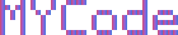
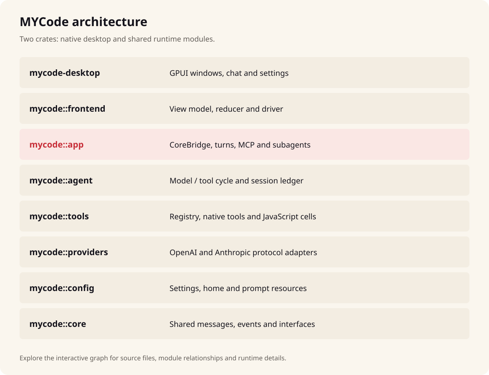

原生叠纸桌面工作台
支持亮色/深色主题与 S–XL 字体缩放，提供默认聊天空间、可固定或浮层的 Details 面板、语法高亮代码块与内联 Git Diff 检查视图。
查看视觉规范 DESIGN.md ↗
Rust 2024 · GPUI叠纸像素风的原生桌面工作台。以 Rust 与 GPUI 构建，在单一界面内完成项目对话、QuickJS CodeMode 工具编排、子代理协同与 Git Diff 逐行审阅。
原生支持 Windows x64 / ARM64 与 macOS Apple Silicon，通过本机 Magpie 网关接入模型与 MCP 服务。
@@ crates/mycode-desktop/src/ui/skin.rs - border_color(skin::border_subtle(theme)) + border_color(theme.border).rounded(radius_card())
const [files, tests] = await Promise.all([ callAsync("grep", { pattern: "spawn" }), callAsync("read_file", { path: "Cargo.toml" }) ]);
工作区仅包含 mycode（运行时、工具、代理与前端状态机）与 mycode-desktop（原生 GPUI 桌面窗口）两个 Rust crate。
支持亮色/深色主题与 S–XL 字体缩放，提供默认聊天空间、可固定或浮层的 Details 面板、语法高亮代码块与内联 Git Diff 检查视图。
查看视觉规范 DESIGN.md ↗内置 QuickJS 运行 run_code 与 wait_code，支持顶层 await、callAsync 与 Promise.all 并发只读检索；单脚本最多调用 256 次工具，写操作与 shell 自动保持串行安全。
阅读 CodeMode 引擎文档 →调研、实现与独立审查拆分为专用角色：写入角色默认隔离在 Git worktree 中运行，并通过 agent_status、agent_stop 与 agent_message 保持可控。
定位子代理模块源码 →由本机 Magpie 统一提供模型目录与鉴权，热加载全局规则、Skills、角色定义与 MCP 工具；会话账本、索引与工作区状态持久保存在 ~/.mycode。
查看运行时数据流 →每次请求经 Magpie 转发模型后，由本地工具循环、QuickJS CodeMode 与子代理协同落地到工作区并写入本地账本。

安装 Magpie 插件绑定 MCode 模型后即可运行，也可直接从源码构建桌面客户端。
支持规则层叠（AGENTS.md / MYCODE.md）、@ 文件提及，每条消息最多附带 4 张图片与 8 个文本文件。